2026 · 우수학생논문상
대한전자공학회 (IEIE) 2026 하계학술대회
「멀티에이전트 환경에서의 적대적 커리큘럼 강화학습 기반 게임 AI 안정성 증강」 논문으로 우수학생논문상을 수상했습니다.
About
2020.03 ~ 2023.03 성사중학교
2023.03 ~ 2026.03 하나고등학교
2026.03 ~ 현재) KENTECH 에너지공학과
Paper
강화학습 기반 1인칭 시점 LOD 제어를 통한 고품질·고효율 시뮬레이션 렌더링
저자: 김종원, 신욱철 · 한국에너지공과대학교 (2026)
Learning What to Render in First-Person View: Visibility-Aware Level-of-Detail Control for Quality-Preserving Efficient Rendering
PDF 열기
멀티에이전트 환경에서의 적대적 커리큘럼 강화학습 기반 게임 AI 안정성 증강
저자: 김종원 · 한국에너지공과대학교 (2026)
Enhancing Game AI Stability Based on Adversarial Curriculum Reinforcement Learning in Multi-Agent Environments
PDF 열기
Adversarial Reinforcement Learning 기반 탐사 로봇 안정성 증강에 대한 연구
게재처: 한국정보과학회 2024 한국소프트웨어종합학술대회 논문집 (2024)
발표: 한국정보과학회 2024 한국소프트웨어종합학술대회, Yeosu, Korea (Dec. 2024)
PDF 열기
언리얼 엔진 기반 LiDAR 탑재 탐사체를 이용한 콜리전 포함 3D 맵 생성 및 활용에 대한 연구
게재처: 한국정보과학회 2024 한국컴퓨터종합학술대회 논문집 (2024)
발표: 한국정보과학회 2024 한국컴퓨터종합학술대회, Jeju, Korea (Jun. 2024)
PDF 열기
Graph Theoretical Analysis of Torus with NetworkX.
게재처: 한국정보과학회 2023 한국소프트웨어종합학술대회 논문집 (2023)
발표: 한국정보과학회 2023 한국소프트웨어종합학술대회, Busan, Korea (Dec. 2023)
PDF 열기
Work
진행했던 프로젝트들을 정리한 페이지입니다.
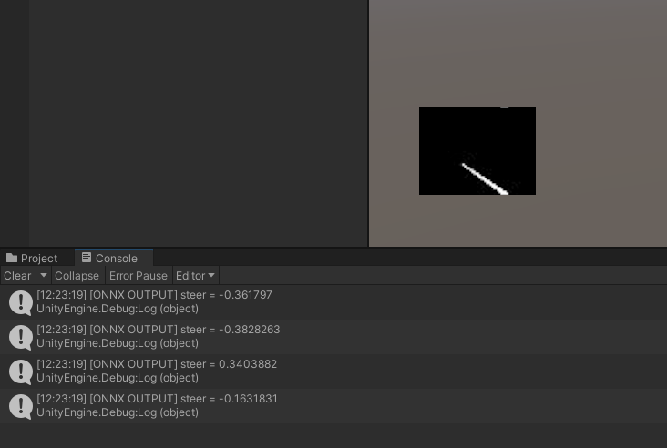
Sim-to-Real 환경을 구축하여 카메라 기반 주행 강화학습을 진행한 프로젝트입니다.
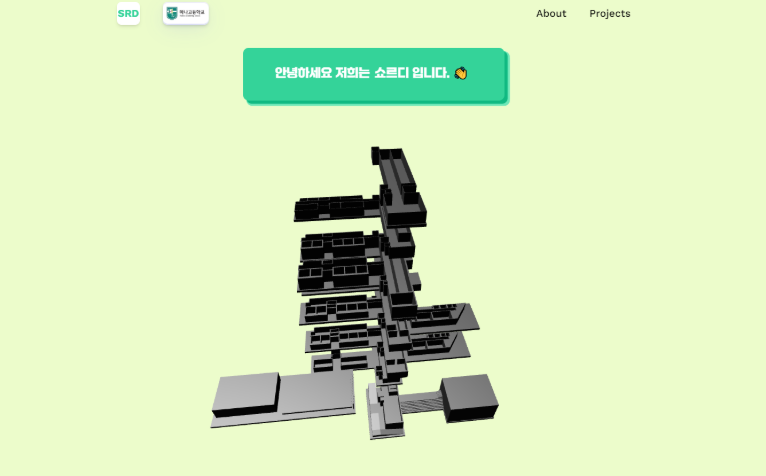
Three.js를 이용한 인터랙티브 길찾기 웹서비스입니다.
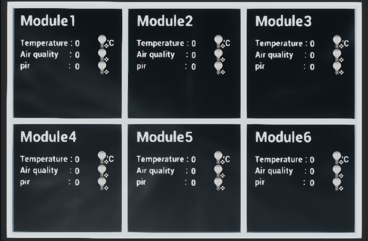
대한기계학회주관 전국학생설계경진대회 출품작으로, Unreal Engine MQTT 플러그인 기반 다기능 센서 기반 스마트 재난 알림 시스템입니다.

체류지역 데이터 기반 관광지 추천 서비스 백엔드 프로젝트입니다. 카카오맵 API 및 랜드마크 기록 시스템을 이용하여 관광지를 추천합니다.
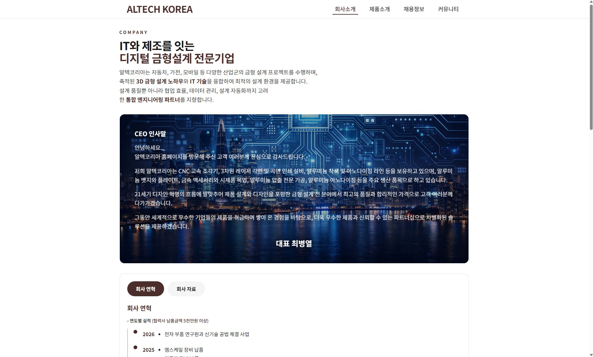
알루미늄 시스템 창호 전문기업 알텍코리아의 기업 홈페이지를 제작한 프로젝트입니다.
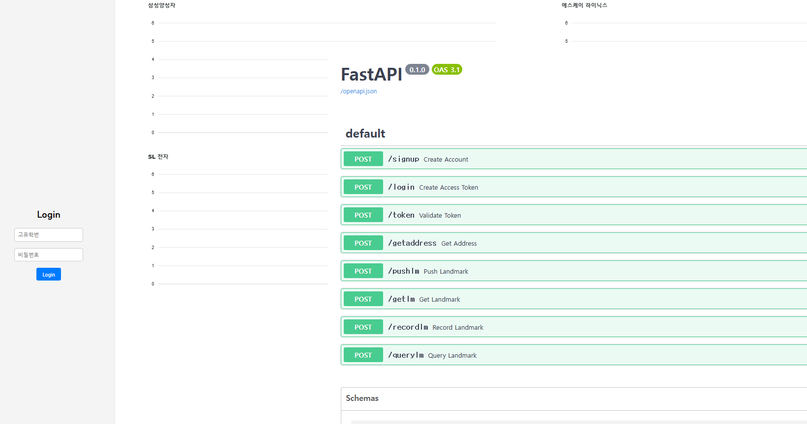
모의 주식 게임 프로젝트를 FastAPI와 React를 이용하여 웹 서비스로 구현했습니다.
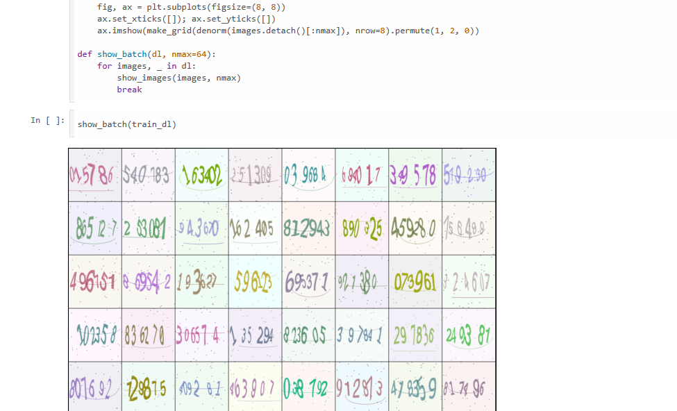
DCGAN을 이용한 캡차 생성 프로젝트입니다.
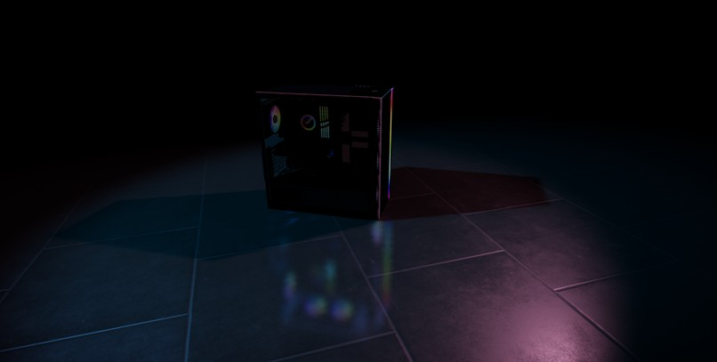
Three.js를 활용한 3D PC 모델 웹 렌더링 및 머티리얼 적용 프로젝트입니다.

KCC2024 - 언리얼 엔진 및 LiDAR 센서 기반 콜리전 포함 3D 맵 생성 시뮬레이션
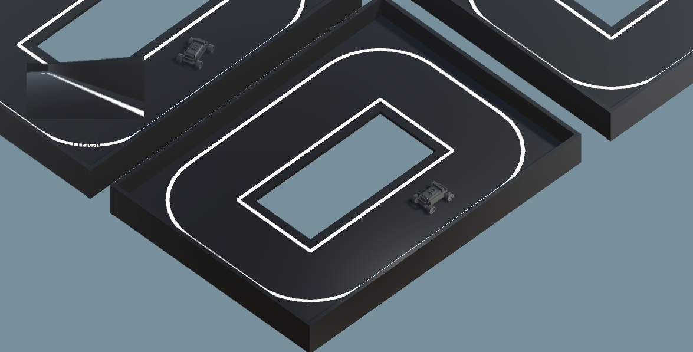
2024년 현대모비스주관 자율주행자동차 대표 시범주행을 진행한 코드입니다.
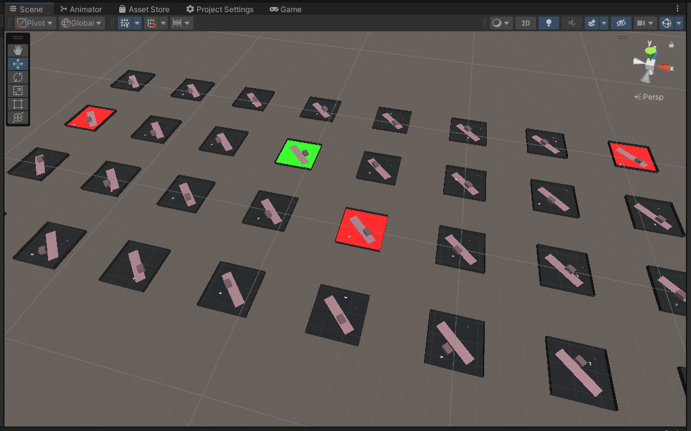
KSC2024 - Adversarial Reinforcement Learning 기반 탐사 로봇 안정성 증강
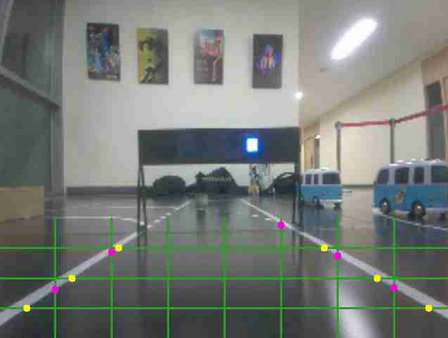
2025년 현대모비스주관 자율주행자동차 경진대회 우수상을 수상하였으며, 작성한 논문의 배경이 되는 코드입니다.
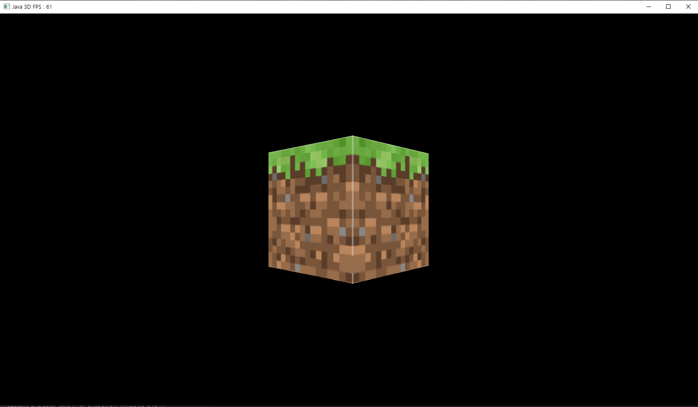
2024년 AP Computer Science 수업에서 진행한 프로젝트로, LWJGL을 이용하여 3D 게임 엔진을 위한 그래픽스 파이프라인의 일부를 제작했습니다.
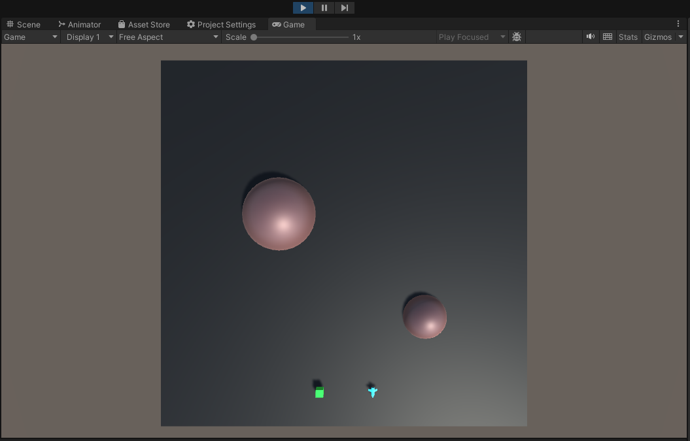
Unity ML-Agents를 이용하여 우주선 항로 최적화 강화학습 프로젝트를 진행했습니다.
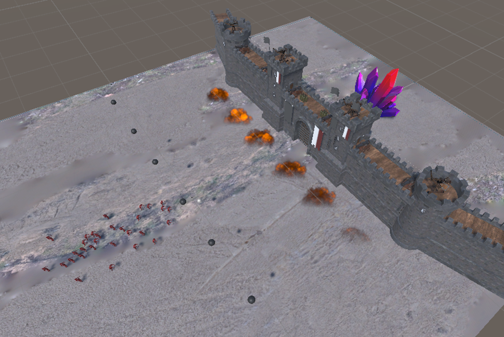
공성전 배경의 디펜스게임을 강화학습시켜 다각도로 연출하고, 학습결과를 관찰한 프로젝트입니다.
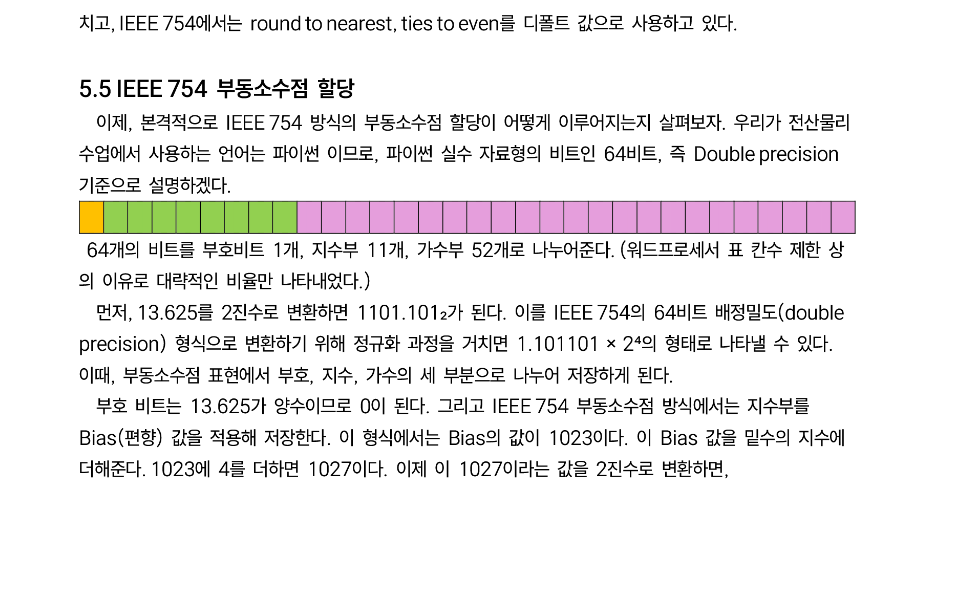
전산물리학 수업을 수강하며 진행한 실습 및 예제를 정리한 기록입니다.
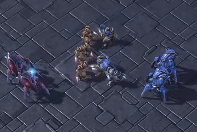
스타크래프트의 유닛을 멀티에이전트로 처리하여 Q러닝 강화학습을 진행한 프로젝트입니다.
Awards
대외활동 수상실적 및 수료증입니다.
Contact
Email
kkcasl@ieee.org
sadd21331@naver.com
kkcasl21331@gmail.com
sadd21331@kentech.ac.kr
Phone Number
010-8486-1679
GitHub
https://www.github.com/kcasl
Instagram
https://www.instagram.com/k.kcasl